A quick tour of ppgmmga
Alessio Serafini, Luca Scrucca
13 Sep 2025
Source:vignettes/ppgmmga.Rmd
ppgmmga.RmdIntroduction
An R package implementing a Projection Pursuit algorithm based on finite Gaussian Mixtures Models for density estimation using Genetic Algorithms (PPGMMGA) to maximise a Negentropy index. The PPGMMGA algorithm provides a method to visualise high-dimensional data in a lower-dimensional space, with special reference to reveal clustering structures.
Banknote data
library(mclust)
data("banknote")
X <- banknote[,-1]
Class <- banknote$Status
table(Class)
## Class
## counterfeit genuine
## 100 100
clPairs(X, classification = Class,
symbols = ppgmmga.options("classPlotSymbols"),
colors = ppgmmga.options("classPlotColors"))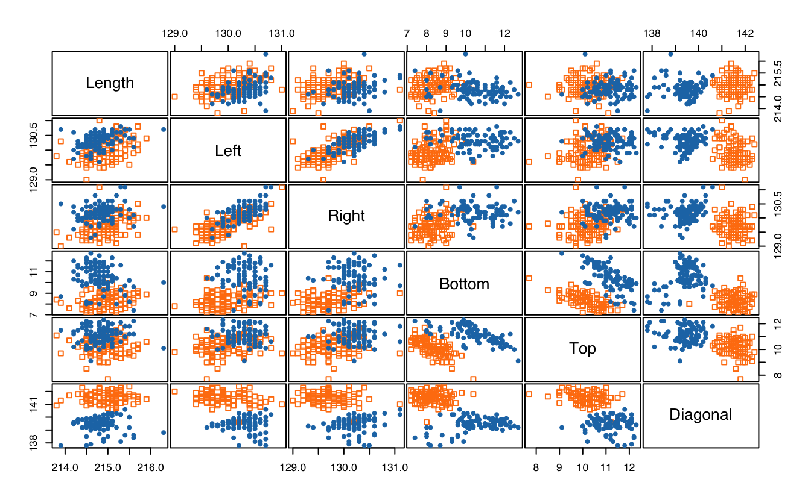
1-dimensional PPGMMGA
PP1D <- ppgmmga(data = X, d = 1, seed = 1)
PP1D
## Call:
## ppgmmga(data = X, d = 1, seed = 1)
##
## 'ppgmmga' object containing:
## [1] "data" "d" "approx" "GMM" "GA"
## [6] "Negentropy" "basis" "Z"
summary(PP1D)
## ── ppgmmga ─────────────────────────────
##
## Data dimensions = 200 x 6
## Data transformation = center & scale
## Projection subspace dimension = 1
## GMM density estimate = (VEE,4)
## Negentropy approximation = UT
## GA optimal negentropy = 0.6345935
## GA encoded basis solution:
## x1 x2 x3 x4 x5
## [1,] 3.268902 2.373044 1.051365 0.313128 0.531718
##
## Estimated projection basis:
## PP1
## Length -0.0119653
## Left -0.0934775
## Right 0.1602105
## Bottom 0.5740698
## Top 0.3450346
## Diagonal -0.7189203
##
## Monte Carlo Negentropy approximation check:
## UT
## Approx Negentropy 0.634593544
## MC Negentropy 0.633614256
## MC se 0.002249545
## Relative accuracy 1.001545559
plot(PP1D)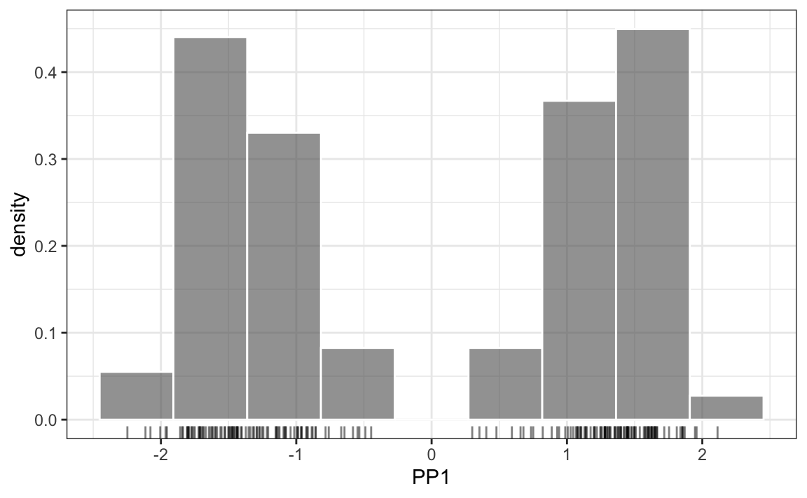
plot(PP1D, class = Class)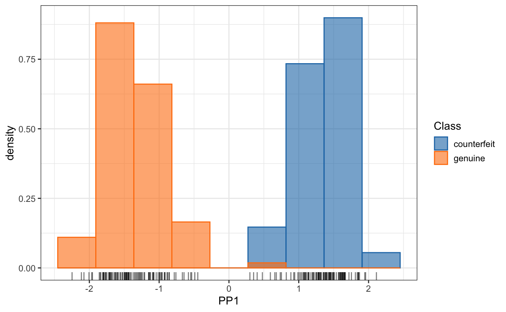
2-dimensional PPGMMGA
PP2D <- ppgmmga(data = X, d = 2, seed = 1)
summary(PP2D)
## ── ppgmmga ─────────────────────────────
##
## Data dimensions = 200 x 6
## Data transformation = center & scale
## Projection subspace dimension = 2
## GMM density estimate = (VEE,4)
## Negentropy approximation = UT
## GA optimal negentropy = 1.13624
## GA encoded basis solution:
## x1 x2 x3 x4 x5 x6 x7 x8
## [1,] 2.268667 2.929821 1.061407 1.084929 0.30443 3.85462 0.98329 1.11377
## x9 x10
## [1,] 0.167174 1.668403
##
## Estimated projection basis:
## PP1 PP2
## Length -0.0372687 -0.0718319
## Left 0.0312555 -0.1198116
## Right -0.1548079 0.0630092
## Bottom -0.0856931 0.8639049
## Top -0.1024990 0.4603727
## Diagonal 0.9776601 0.1350576
##
## Monte Carlo Negentropy approximation check:
## UT
## Approx Negentropy 1.136240194
## MC Negentropy 1.137260367
## MC se 0.003527379
## Relative accuracy 0.999102956
summary(PP2D$GMM)
## -------------------------------------------------------
## Density estimation via Gaussian finite mixture modeling
## -------------------------------------------------------
##
## Mclust VEE (ellipsoidal, equal shape and orientation) model with 4 components:
##
## log-likelihood n df BIC ICL
## -1191.595 200 51 -2653.405 -2666.898
plot(PP2D$GA)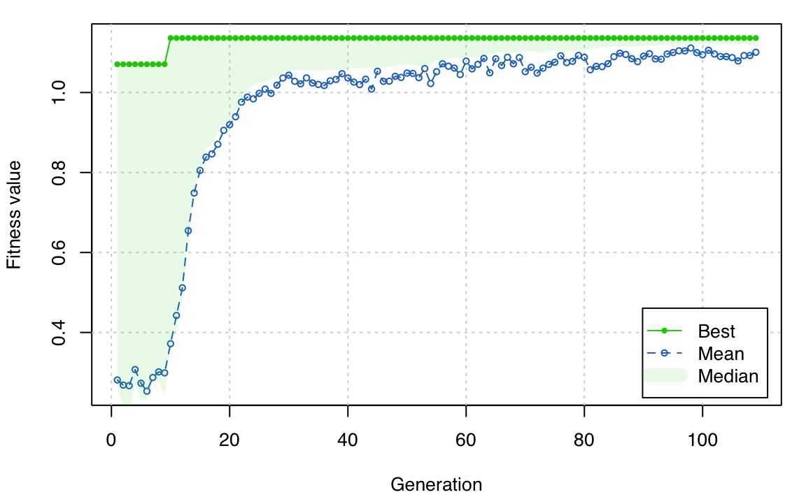
plot(PP2D)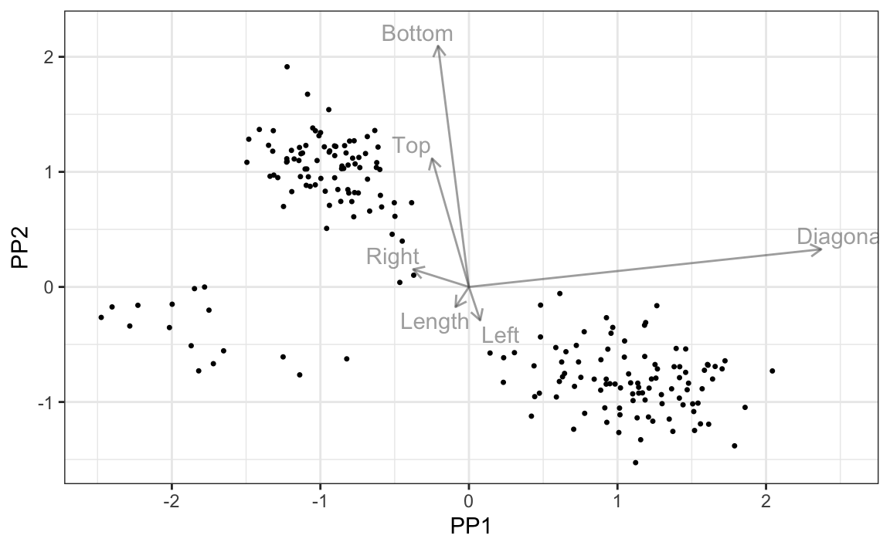
plot(PP2D, class = Class, drawAxis = FALSE)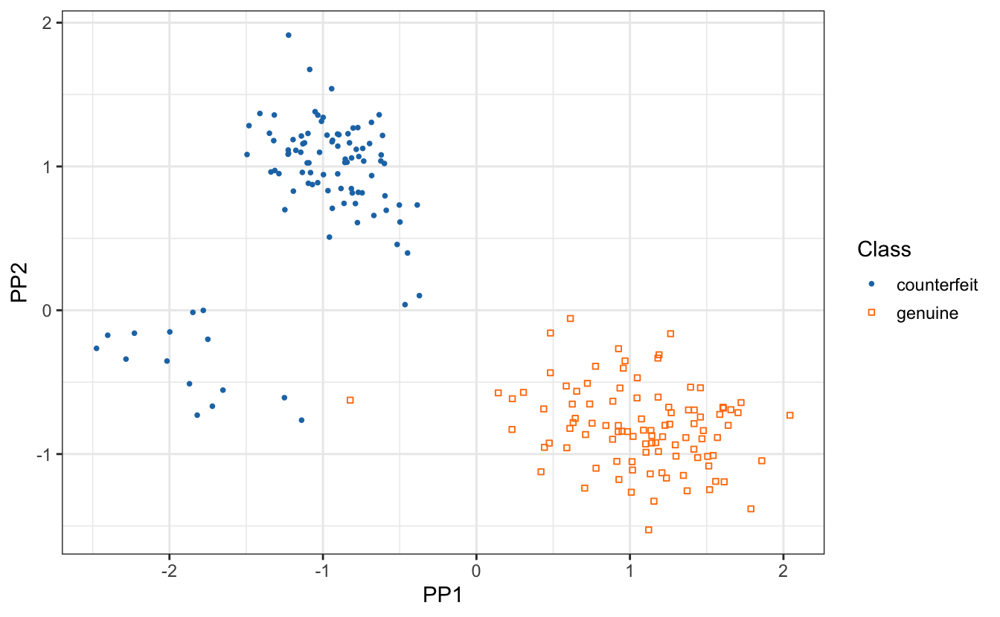
3-dimensional PPGMMGA
PP3D <- ppgmmga(data = X, d = 3,
center = TRUE, scale = FALSE,
gatype = "gaisl",
options = ppgmmga.options(numIslands = 2),
seed = 1)
summary(PP3D)
## ── ppgmmga ─────────────────────────────
##
## Data dimensions = 200 x 6
## Data transformation = center
## Projection subspace dimension = 3
## GMM density estimate = (VVE,3)
## Negentropy approximation = UT
## GA optimal negentropy = 1.16915
## GA encoded basis solution:
## x1 x2 x3 x4 x5 x6 x7 x8
## [1,] 4.33834 2.529314 1.092368 1.076958 0.831503 4.978463 2.007285 2.077611
## x9 x10 ... x14 x15
## [1,] 1.993972 2.210092 1.572042 2.527132
##
## Estimated projection basis:
## PP1 PP2 PP3
## Length -0.3090123 0.5132540 -0.5707432
## Left -0.1212963 -0.1763598 -0.3272027
## Right 0.3026850 0.4914905 -0.3874791
## Bottom 0.2418408 0.3733881 0.4167023
## Top 0.2645985 0.4937292 0.3429073
## Diagonal -0.8183404 0.2841082 0.3547172
##
## Monte Carlo Negentropy approximation check:
## UT
## Approx Negentropy 1.169149622
## MC Negentropy 1.174923134
## MC se 0.004308954
## Relative accuracy 0.995086051
plot(PP3D$GA)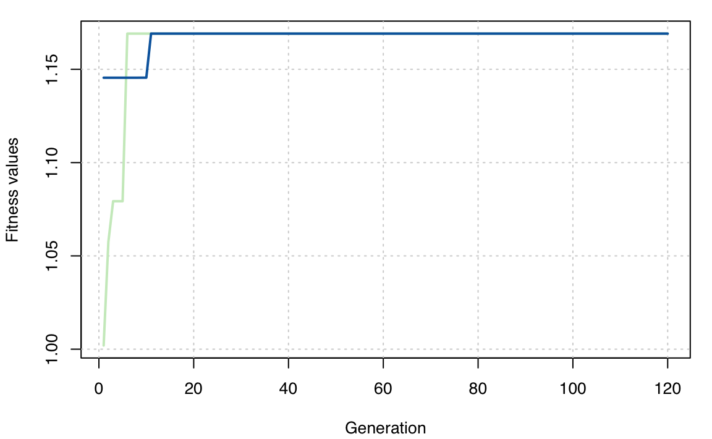
plot(PP3D)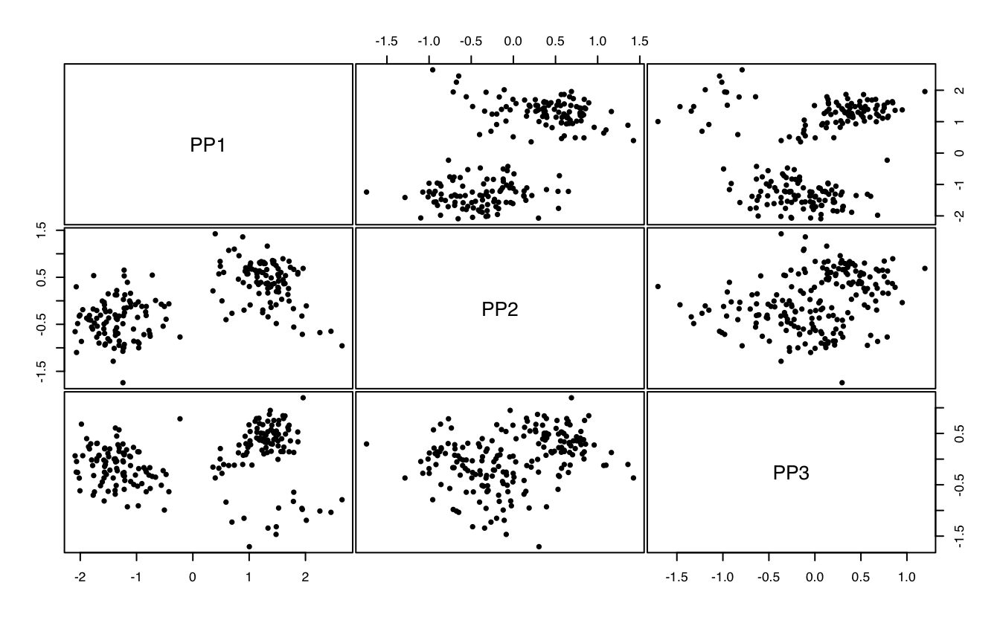
plot(PP3D, class = Class)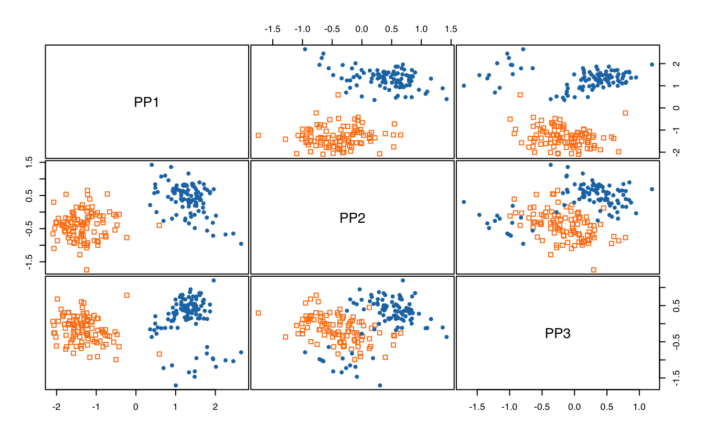
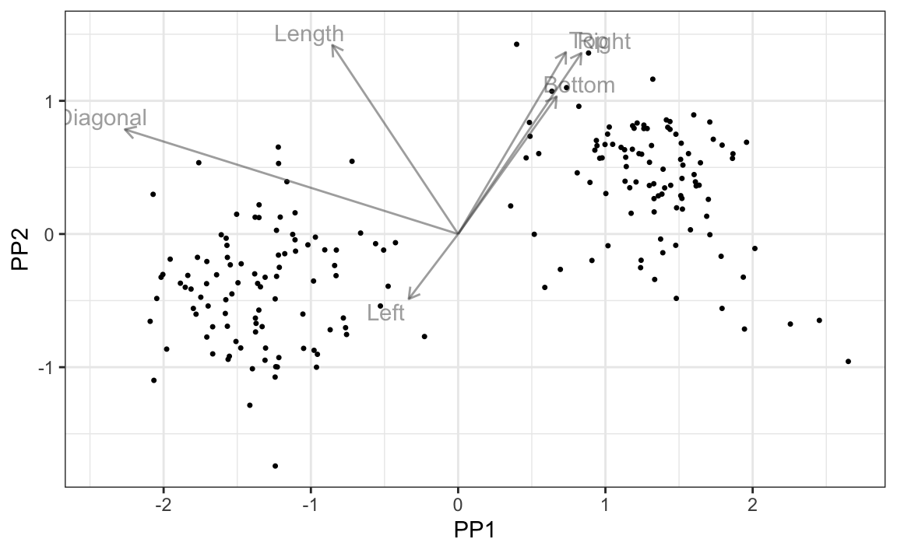
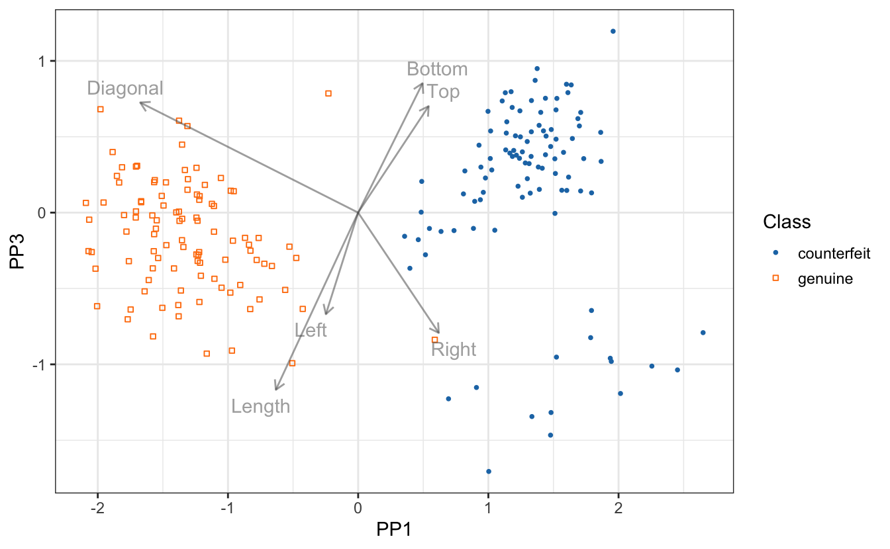
# A rotating 3D plot can be obtained using
if(!require("msir")) install.packages("msir")
msir::spinplot(PP3D$Z, markby = Class,
pch.points = c(20,17),
col.points = ppgmmga.options("classPlotColors")[1:2])References
Scrucca L, Serafini A (2019). “Projection pursuit based on Gaussian mixtures and evolutionary algorithms.” Journal of Computational and Graphical Statistics, 28(4), 847–860. https://doi.org/10.1080/10618600.2019.1598871.
sessionInfo()
## R version 4.5.0 (2025-04-11)
## Platform: aarch64-apple-darwin20
## Running under: macOS Sequoia 15.5
##
## Matrix products: default
## BLAS: /Library/Frameworks/R.framework/Versions/4.5-arm64/Resources/lib/libRblas.0.dylib
## LAPACK: /Library/Frameworks/R.framework/Versions/4.5-arm64/Resources/lib/libRlapack.dylib; LAPACK version 3.12.1
##
## locale:
## [1] en_US.UTF-8/en_US.UTF-8/en_US.UTF-8/C/en_US.UTF-8/en_US.UTF-8
##
## time zone: Europe/Rome
## tzcode source: internal
##
## attached base packages:
## [1] stats graphics grDevices utils datasets methods base
##
## other attached packages:
## [1] mclust_6.1.2 ppgmmga_1.3.1 knitr_1.50
##
## loaded via a namespace (and not attached):
## [1] gtable_0.3.6 jsonlite_2.0.0 dplyr_1.1.4 compiler_4.5.0
## [5] crayon_1.5.3 tidyselect_1.2.1 Rcpp_1.1.0 GA_3.2.4
## [9] jquerylib_0.1.4 scales_1.4.0 yaml_2.3.10 fastmap_1.2.0
## [13] ggplot2_3.5.2 R6_2.6.1 labeling_0.4.3 generics_0.1.4
## [17] iterators_1.0.14 htmlwidgets_1.6.4 tibble_3.2.1 desc_1.4.3
## [21] bslib_0.9.0 pillar_1.10.2 RColorBrewer_1.1-3 rlang_1.1.6
## [25] cachem_1.1.0 xfun_0.52 fs_1.6.6 sass_0.4.10
## [29] cli_3.6.5 withr_3.0.2 pkgdown_2.1.3 magrittr_2.0.3
## [33] digest_0.6.37 foreach_1.5.2 grid_4.5.0 rstudioapi_0.17.1
## [37] lifecycle_1.0.4 vctrs_0.6.5 evaluate_1.0.3 glue_1.8.0
## [41] farver_2.1.2 codetools_0.2-20 rmarkdown_2.29 tools_4.5.0
## [45] pkgconfig_2.0.3 htmltools_0.5.8.1